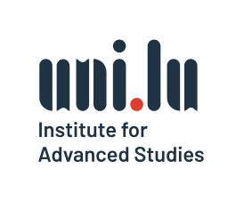

Shared terminology
Describe failures in common terms across agent safety, verification and the affected domains.

Organised under IAS BRAINSTORM 2026
Institute for Advanced Studies · University of Luxembourg
ASCENT 2027
Testing and certifying the safety of autonomous AI in critical applications.
Lorenzo Cazzaro · Maiza De Albuquerque Trigo · Stanisław Tosza
Autonomous AI agents read documents, call tools and execute decisions. In critical systems, their failures can reach people, institutions and entire sectors.
ASCENT brings together AI researchers, legal scholars, domain experts and industry to investigate whether assurance can move from documentation to testing and proof. Which requirements can become machine-checkable properties? Which remain beyond current methods?
The workshop connects two problems often studied separately: the compromise of a single agent and the instability of systems that share models, data or infrastructure. Safety is explored as a technical, legal, ethical and social question.
Describe failures in common terms across agent safety, verification and the affected domains.
Trace local compromise to collective harm, and connect those risks to regulatory requirements.
Select two or three novel, tractable problems, each with a risk and feasibility assessment.
Leave with a position-paper outline, a proposal roadmap and a continuing research network.
Legal and sectoral requirements meet AI security, formal verification and the realities of deployed systems.
An open research ambition: the workshop will also identify obligations that cannot yet be formalised or verified.
Which EU AI Act and sectoral obligations can be mapped to machine-checkable properties of deployed AI agents? What evidence should regulators be prepared to accept?
In the workshop Mixed teams turn a single legal duty into a safety property and a compliance test, including evidence that makes responsibility traceable.
Can compromising a single AI component induce a clinical, industrial or public-service failure? At what cost relative to a classical attack?
In the workshop A live failure demonstration and a shared wall chart trace weaknesses through common models, data and infrastructure, recording the conditions for propagation.
What kind of stress test could certify agents as individually and, more importantly, collectively safe once they interact?
In the workshop Teams specify an agent population, an adversary and a pass/fail criterion for a test of multiple interacting agents.
Short talks make space for hands-on work. Every contribution follows a shared template: a failure, a rule that should hold, and a test for that rule.
Participants prepare a one-page domain problem and annotate a shared glossary. Organisers circulate a synthesis before the event.
A hands-on tutorial, live demonstration and roundtables build a common picture of agentic AI and its risk surfaces.
1-2-4-All generates failure cases. A Technology of Participation consensus workshop clusters and scores them for novelty, testability and severity.
Mixed teams develop the position paper and follow-up proposals, working to agreed leads, roles and milestones.
How could an agent cause harm?
What rule should always hold?
How would we check that rule?
Session timings, contributors and practical details will be announced when confirmed.
Provisional programmeInvitation only. Workshop sessions are reserved for invited participants. The Open to all keynote on Thursday 4 March is public and open to everyone.
A short tutorial and a live demonstration of an agentic-AI failure give participants a common reference case.
Participants connect their domain to agentic AI safety and begin mapping risks across critical applications.
Input from Luxinnovation and University research facilitators on sector connections and suitable project calls.
Open to all No invitation needed
Public keynote by prof. Ryan Calo (University of Washington).
Work individually, in pairs, in fours and as a whole group. Place failure–property–test contributions on the wall chart from local weakness to systemic event.
Begin with silent clustering; name and score themes for novelty, testability and severity, selecting the two or three strongest questions.
Mixed legal, domain and technical teams define a property, a threat actor and the evidence needed to check compliance and trace responsibility.
Specify the agent population, adversary and pass/fail criterion. Assess the seriousness, realism and feasibility of the selected scenarios.
Agree the paper outline, target calls, consortium roles, leads and milestones for continued collaboration.
Experts
Confirmed organisers and participants from Luxembourg and abroad, spanning AI security, verification, education, law and ethics. Further participants will be announced as they confirm.
SnT · University of Luxembourg
AI security and formal verification.
FHSE · University of Luxembourg
Education, sociology and the social sciences.
FDEF · University of Luxembourg
Law, compliance, financial crime and technology regulation.
FDEF · University of Luxembourg
Law compliance and financial crime.
SnT · University of Luxembourg
AI testing and software engineering for AI systems.
FHSE · University of Luxembourg
Educational technology and the use of AI in learning.
University of Genoa · Italy
AI security and data poisoning.
University of Washington · USA
Ethics, law and the regulation of AI in military applications.
Outcomes
A position paper, a research roadmap and an interdisciplinary network to carry the work forward.
A shared taxonomy of agentic-AI failures, a mapping of legal obligations to verifiable or testable properties, and a cross-domain stress-test design.
The aim is an open-access publication, with findings presented at two to three conferences or seminars.
A commitment-based roadmap to a joint research proposal, with consortium roles, a lead institution and suitable national or European calls agreed with research facilitators.
Partner responsibilities and writing milestones will be established during the workshop.
A continuing collaboration across SnT, FHSE and FDEF with international partners. The shared glossary, threat-modelling results and stress-test specification will become citable artefacts, with research data handled according to FAIR principles.
For workshop enquiries, participation and collaboration, contact the organising team.
ASCENT is organised under the
IAS BRAINSTORM 2026 programme
of the University of Luxembourg Institute for Advanced Studies.